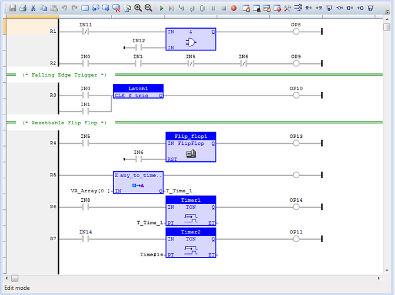

In addition to the well-established Trio BASIC programming language, select Trio Motion Coordinators also have capability to be programmed using the international standard IEC 61131-3 range of languages.
Motion Perfect has editors for the four languages: Ladder (LD), Structured Text (ST), Function Block Diagram (FBD) and Sequential Function Chart (SFC). The use of the Motion Perfect editor is covered in the Motion Perfect section of the manual. Motion Perfect compiles the IEC 61131-3 programs and loads the compiled code into the Motion Coordinator. The code is run in the Motion Coordinator by run-time execution software that operates in parallel to the Trio BASIC run-time environment, thus allowing both programming systems to be used together within the same Motion Perfect project and on the same Motion Coordinator.

The main functions of the IEC 61131-3 languages adhere to the standard, thus allowing a programmer already familiar with IEC 61131-3 will be able to start creating programs with ease. The only new features a programmer needs to learn is how to work within the Motion Perfect environment. The IEC 61131-3 editor and toolbox allows for rapid development of standard programs. Inputs, Outputs, VRs and TABLE can be bound to named IEC 61131-3 variables, giving access from any programming method to the Motion Coordinator’s I/O space.
The motion functions used by TrioBASIC cover a wide range of motion from simple point-to-point moves, through multi-axis interpolated motion, gearing and linked moves, to sophisticated robotics. Application areas include cutting, gluing, packaging machines, printing machines, pick and place, and production lines of all kinds. The functionality of TrioBASIC has been put into function block form to allow it to be immediately recognised by programmers familiar with TrioBASIC.
Although it is not a strict match for the PLCopen motion control part of IEC 61131-3, it does have many parallel move types which can be used in place of the standard functions. What is more, the motion library has the full set of Trio motion functions that have been proven to enable complex axis synchronisation to be achieved in a very straight-forward way. Setting up complex, repeatable motion in a very short time is now available in the IEC 61131-3 languages.
Each Trio Motion function is available as a function block. The function blocks can be added to any of the four supported programming methods, including the Ladder Diagram (LD). Function blocks run either when an enable input is set to TRUE or are triggered by a rising edge on the Execute input. For example, a TC_MOVE1 function block may be set up with the axis number set on one input and the move distance set on the second input. The move only starts when the Execute input changes from FALSE to TRUE.
In the IEC 61131-3 programming system, the program is continuously scanned. Therefore, it is not possible to have the equivalent of a WAIT IDLE that is commonly used in BASIC. Each function block therefore has several outputs that can be used to determine whether the move is buffered, running, completed or if there was an error. The common outputs are:
Busy: This BOOL output is TRUE after the Execute input has triggered the function. It goes back to FALSE once the motion function has completed.
Done: This BOOL output is TRUE after the motion function has completed its task normally.
Buffered: This BOOL output is TRUE to show that the motion command is waiting in NTYPE buffer.
Active: This BOOL output is TRUE when the motion command is running. i.e. in MTYPE.
Aborted: This BOOL output goes TRUE if the motion is terminated due to a CANCEL or reaching an end-limit. It indicates that the motion did not run to completion.
Error: This BOOL output is set TRUE if a program error is detected. For example, if an input value is out of range.
ErrorID: A UINT value which gives the error number. This value is available when the Error output is TRUE. The meaning of the ErrorID value is the same as a Trio BASIC run-time error value.
Each function block is described in the usual format for IEC 61131-3 library components. The details are limited to those required to add the function block to a program. For a full description of the associated motion command, see the Trio BASIC commands in chapter 2. Function block TC_MOVELINK, for example, has the same operation as the Trio BASIC MOVELINK command, and the entry in chapter 2 includes examples of how it may be used.